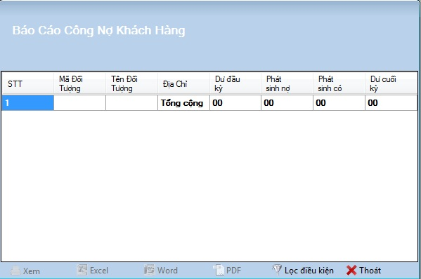

Cách thao tác với Báo cáo công nợ khách hàng
Vào Hệ thống ->Báo cáo -> Báo cáo công nợ-> Theo Khách Hàng

Thanh tiêu đề: Chứa tên của danh mục đang làm việc.
- Chọn đối tượng hiện thời nếu muốn xem báo cáo công nợ .
- Chọn In trong thanh công cụ bên dưới để in báo cáo.
- Chọn PDF trong thanh công cụ bên dưới nếu muốn xuất báo cáo ra file PDF .
- Chọn Word trong thanh công cụ bên dưới nếu muốn xuất báo cáo ra file Word.
- Chọn Excel trong thanh công cụ bên dưới nếu muốn xuất báo cáo ra file Excel.
- Chọn Lọc điều kiện theo thời gian
- Chọn kỳ muốn lọc theo thời gian.
- Chọn Thoát để trở lại Danh mục quản lý .